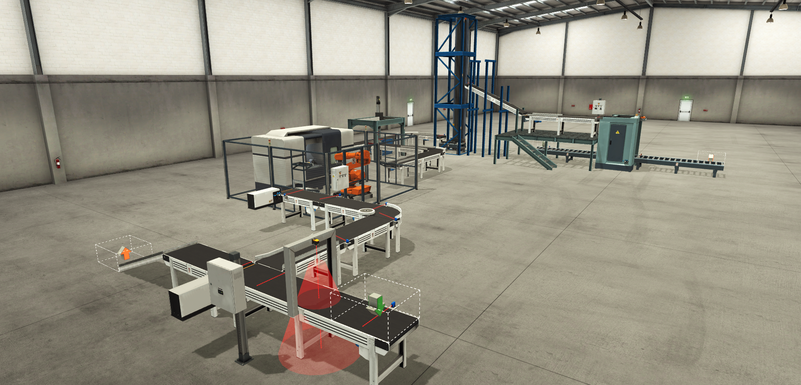
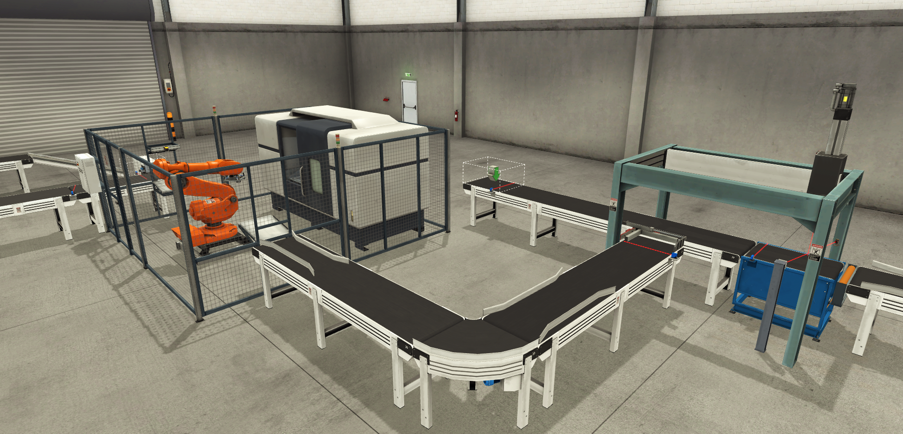
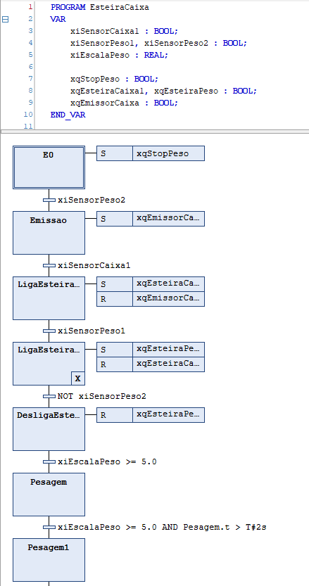
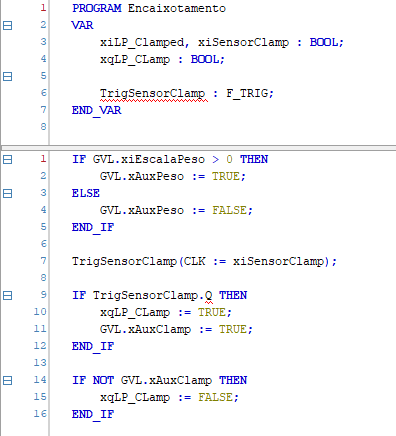
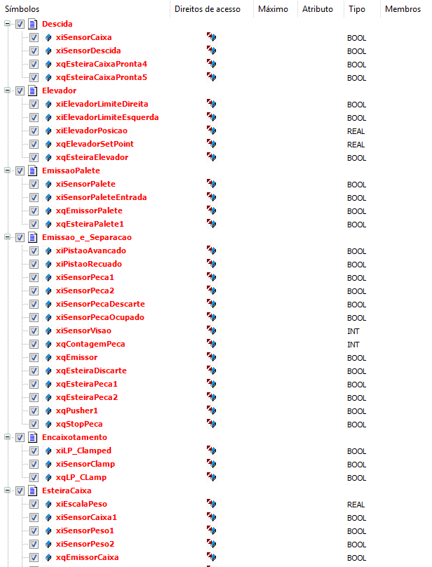

INDUSTRIAL AUTOMATION
Simulation of Part Sorting, Machining, Transport and Storage
A production line simulated in Factory I/O and controlled by a PLC programmed in CODESYS. The system produces parts, sorts out the desired color, machines, boxes, lifts and palletizes them, all fully automatically. Developed as a pair with Henrique Xavier Vincentini.
Overview
The system produces raw parts in different colors and sorts out those of the desired color. These parts go to a CNC machine and then to a suspended pick & place, which boxes five parts at a time. The boxes are carried by a lift and then palletized.
The whole process is automatic and needs no operator. The only intervention foreseen is changing the color of the parts to be produced.
The scene includes the following equipment:
- Pistons and positioners;
- Conveyors;
- CNC machine with robotic arm;
- Suspended pick & place arm;
- Industrial lift;
- Palletizer.
Objectives and methodology
The goal was to simulate, in a completely automatic way, the operations of a real industrial environment, integrating different machines into a single coordinated sequence.
How it was developed
The work was done as a pair, following these steps:
- Defining the idea and the process;
- Building the scene in Factory I/O;
- Defining all the required inputs and outputs;
- Sketching functional diagrams (state machines);
- Programming in SFC with Structured Text blocks, in CODESYS;
- Integrating all the parts into a main program;
- Testing the complete process and fixing the faults found.
In total, the process works with about 80 variables in Factory I/O, including sensors, actuators and auxiliary variables, of boolean, integer and floating-point types.
Video demonstration
Demonstration of the system running in Factory I/O, with the process steps executed sequentially and automatically, from part production to palletizing.
Scene and programming





The project's source code is not available for download. This page gathers the video demonstration and the images of the scene and the programming.
Results
The simulation worked as planned. The system runs all the steps in sequence, from production to palletizing, and also handles unexpected events robustly during operation.
Limitations and future improvements
Despite the positive result, the simulation runs slowly and does not represent large-scale production. As next steps, I plan to increase the number of parts produced in the simulation and integrate a SCADA system into the process.